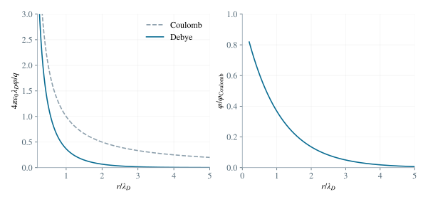
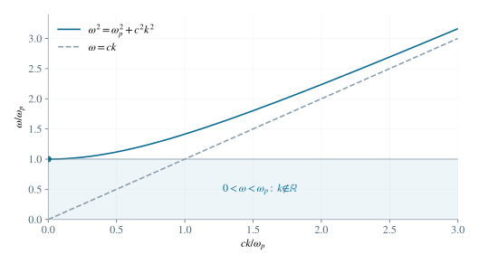

2.1 由电荷分离求回复电场
先取 ξ>0。电子层向右移动后，左侧留下厚度 ξ 的净正电荷区，右侧形成同样厚度的净负电荷区。它们的面电荷密度大小为 Σ=n0eξ。一片无限带电薄层单侧的场强大小为 Σ/(2ε0)；两层之间的场同向相加，外侧反向抵消。因此，在两薄层之间
E=ε0n0eξx^. （4）当 ξ<0 时正、负薄层交换左右，电场反向，故上述带符号公式仍适用。忽略端部薄层中非均匀场对整体运动的高阶影响。
2.2 由电子受力导出集体振动
单个电子的电场力为 −eE，始终指向使位移减小的方向。所有体区电子受到相同回复加速度，于是整体位移满足
meξ¨=−eEx=−ε0n0e2ξ. （5）ξ¨+ωp2ξ=0,ωp=meε0n0e2. （6）对于任意给定初值 ξ(0)=ξ0,ξ˙(0)=vξ，解为 ξ(t)=ξ0cosωpt+(vξ/ωp)sinωpt。频率不依赖层厚 L：位移决定面电荷密度，因而决定回复场。
2.3 线性化玻尔兹曼分布，求德拜长度
设 u=eφ/(kBT)，在 ∣u∣≪1 时使用 eu=1+u+O(u2)。数密度改变量和净电荷密度分别为
δn(r)=kBTn0eφ(r),ρq(r)=e[n0−n(r)]=−kBTn0e2φ(r). （7）当 φ>0 时，电子势能 −eφ 较低，电子聚集，净电荷为负。泊松方程为 ∇2φ=−ρq/ε0；代入线性电荷密度，右边成为 [n0e2/(ε0kBT)]φ。球对称时 ∇2φ=(rφ)′′/r，与题给 φ/λD2 比较系数，便得到
λD=n0e2ε0kBT. （8）表达式中的电势消去，说明德拜长度是线性响应的介质参数。电势为零处也可通过线性比例系数定义同一长度，而不必直接对零作除法。
2.4 施加远、近边界条件，得到屏蔽电势
令 u(r)=rφ(r)，径向方程化为 u′′=u/λD2，故 u=Ae−r/λD+Ber/λD。要求无穷远处电势不发散，必须有 B=0。点电荷的库仑奇性再给出 A=q/(4πε0)。于是
φ(r)=4πε0rqe−r/λD. （9）近区 r≪λD 时，指数因子接近 1，领先阶为库仑势；远区 r≫λD 时，电势在 1/r 的几何衰减外还乘以指数衰减。相应感应电荷密度为
ρq(r)=−4πλD2rqe−r/λD. （10）感应电荷总量要对球壳体积 4πr2dr 积分。代入密度后只剩 −(q/λD2)∫0∞re−r/λDdr。令 s=r/λD，积分为 λD2∫0∞se−sds。分部积分给 ∫0∞se−sds=[−se−s]0∞+∫0∞e−sds=1，于是
∫0∞4πr2ρq(r)dr=−λD2q∫0∞re−r/λDdr=−q. （11）因此远处看不到未被抵消的净总电荷；这给出指数屏蔽的电荷图像。

图 2. 屏蔽势与库仑势的比较。左图以 q/(4πε0λD) 为电势单位；右图为两势之比 exp(−r/λD)。
2.5 求周期外场下的稳态受迫位移与介电函数
在给定空间点，把空间相位 eikx 吸收到局部场振幅 Eloc 中。横向运动方程为 meη¨=−eEloce−iωt。代入同频受迫解，得到
−meω2η0=−eEloc,η0=meω2eEloc. （12）这里取的是周期受迫部分；自由电子运动的一般解还允许常位移和匀速漂移，由初始条件决定，不计入同频介电响应。因为电子带负电，极化强度与电场反向：
P=−meω2n0e2E=ε0[ε(ω)−1]E. （13）两种极化写法都与同一个局部总电场成正比，因此比较其标量系数得 ε0(ε−1)=−n0e2/(meω2)。除以 ε0 并利用已经求出的 ωp2=n0e2/(meε0)，得到无碰撞冷等离子体的横向相对介电函数
ε(ω)=1−meε0ω2n0e2=1−ω2ωp2. （14）2.6 由色散关系区分传播与倏逝
将介电函数代入题给色散关系，得到
ω2=ωp2+c2k2,k2=c2ω2−ωp2. （15）当 ω>ωp 时，k 为实数，存在传播平面波。
当 0<ω<ωp 时，令 k=iκ 且 κ=ωp2−ω2/c>0。对于半无限介质中向 x>0 延伸的场，取衰减支 eikx=e−κx，而不是发散支。这是倏逝场，不是体内的行进平面波。
当 ω=ωp 时，k=0，处在截止点；它是无空间相位推进的极限，不属于非零波数的传播范围。

图 3. 等离子体电磁波的色散关系。只有 ω/ωp>1 时才有实波数；截止点处群速度趋于零。
2.7 进行太阳风数量级估计
使用题给的数量级，而不是把这些近似数值当作精确常量，
ωp∼10−30×10−11107×(10−19)2=105s−1,fp=2πωp∼104Hz. （16）因此本模型中允许传播的频率满足 f>fp，截止频率量级为 104Hz。可见光约为 1014Hz，远高于截止频率，故 ωp2/ω2≪1，介电函数非常接近 1，太阳风在此模型下对可见光透明。
电子的受迫位移振幅按 ω−2 减小，产生的极化相对于外场极小。该解释限于题设无碰撞、均匀等离子体模型，并未包含散射或碰撞吸收。